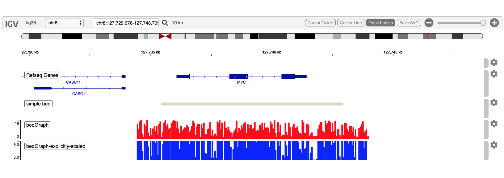

Introduction: a simple demo
Paul Shannon
2022-07-25
v00.basicIntro.RmdOverview
The igvR package provides easy programmatic access in R to the web-based javascript library igv.js to create and display genome tracks in its richly interactive web browser visual interface.
In this vignette we present a few very simple uses of igvR:
- connect to the web browser
- query the names (e.g., “mm10”) of the currently supported genoems
- specify that we will use the hg38 genome
- zoom to the MYC gene
- construct a simple data.frame specifying a bed-like track
- display that data.frame track in the browser using a random color
- create and display a “quantitative” data.frame
- zoom out for a wider view
Your display will look like this at the conclusion of this demo:

Load the libraries we need
Create the igvR instance, with all default parameters (portRange, quiet, title). Javascript and HTML is loaded into your browser, igv.js is initialized, a websocket connection between your R process and that web page is constructed, over which subsequent commands and data will travel.
igv <- igvR()
setBrowserWindowTitle(igv, "simple igvR demo")
setGenome(igv, "hg38")Display a list of the currently supported genomes
print(getSupportedGenomes(igv))Display MYC
showGenomicRegion(igv, "MYC")Create and display minimal 1-row data.frame centered below MYC on chr8
loc <- getGenomicRegion(igv)
tbl.bed <- data.frame(chrom=loc$chrom, start=loc$start + 2000, end=loc$end-2000,
name="simple.example", stringsAsFactors=FALSE)
track <- DataFrameAnnotationTrack("simple bed", tbl.bed, color="random")
displayTrack(igv, track)Create and display a simulated quantitative (bedGraph) track
loc <- getGenomicRegion(igv)
size <- with(loc, 1 + end - start)
starts <- seq(loc$start, loc$end, by=5)
ends <- starts + 5
values <- sample(1:100, size=length(starts), replace=TRUE)
tbl.bedGraph <- data.frame(chrom=rep("chr8", length(starts)), start=starts, end=ends,
value=values, stringsAsFactors=FALSE)
track <- DataFrameQuantitativeTrack("bedGraph", tbl.bedGraph, color="red", autoscale=FALSE,
min=80, max=100)
displayTrack(igv, track)Zoom out by direct manipulation of the currently displayed region
loc <- getGenomicRegion(igv)
half.span <- round((loc$end-loc$start)/2)
new.region <- with(loc, sprintf("%s:%d-%d", chrom, start-half.span, end+half.span))
showGenomicRegion(igv, new.region)